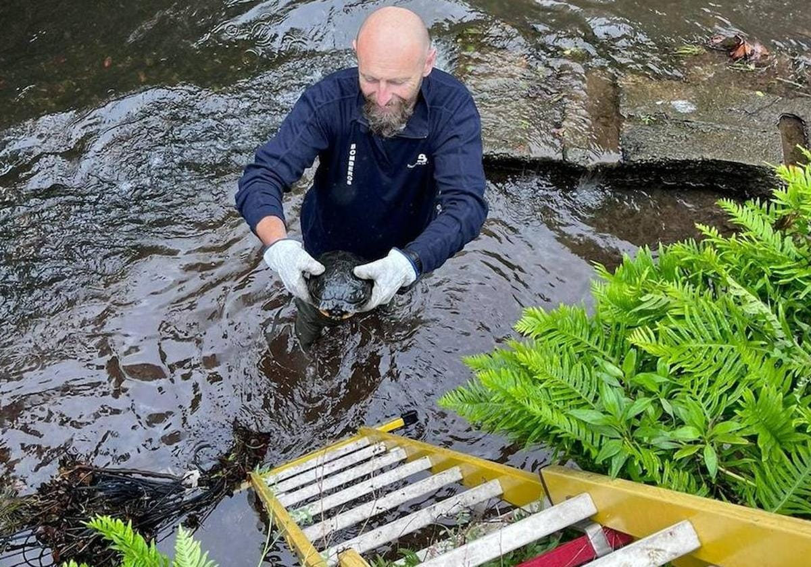
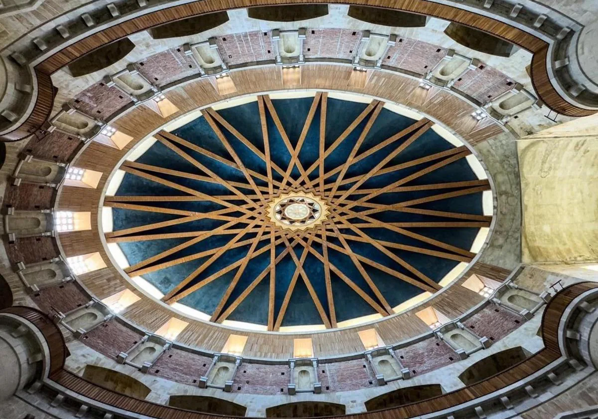
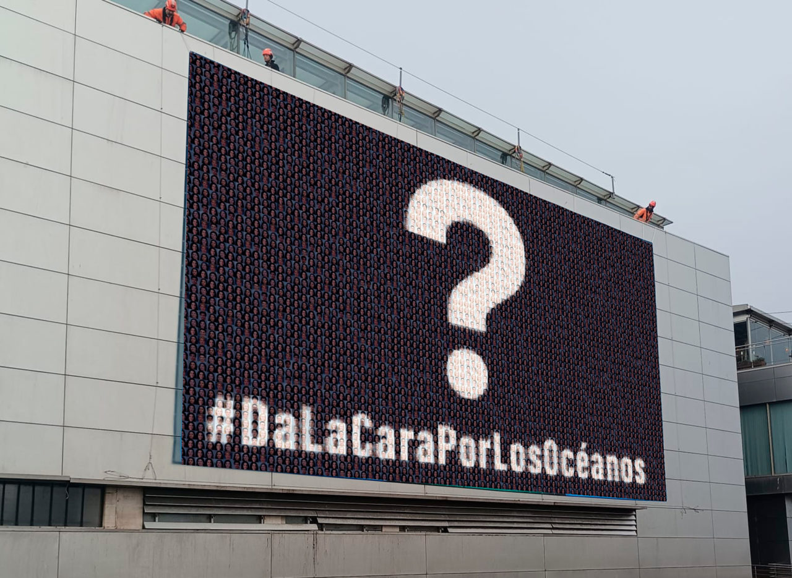

Un mero de 101,20 kilos en el Llar de la Catedral en Oviedo
«Es un regalo del mar Cantábrico», celebra Juan Cuesta, propietario del restaurante.

Rescatan a una tortuga en el río Magdalena, en Avilés, que era incapaz de llegar a la orilla
Según los testigos, el animal era incapaz de llegar hasta la orilla debido a la corriente del río.

La cúpula de la iglesia de la Laboral se descubre
El BIC gijonés se rearma para poder optar a ser Patrimonio de la Unesco tras la restauración de la cúpula y la adecuación de la zona de cocinas.

El Bioparc Acuario de Gijón acogerá la tercera edición del Wild Oceans FilmFest
El festival internacional de cine sobre la conservación de los océanos se celebrará del 4 al 9 de noviembre, con un récord de participación de 491 producciones de 77 países.